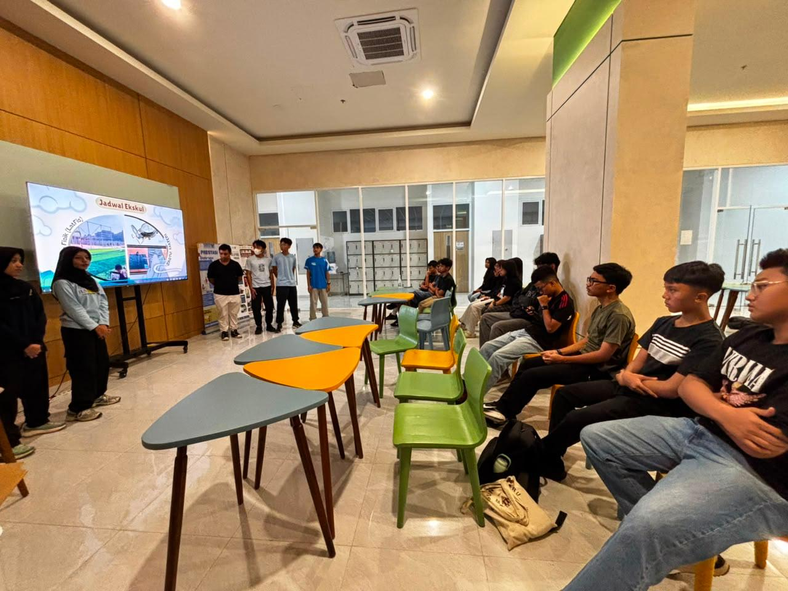

Adventure · 3–5 Juli 2026
PALCAS x MT. PRAU ↗
Tiga hari perjalanan PALCAS menjelajahi Gunung Prau, Jawa Tengah.
Lihat cerita & dokumentasi →Bukan sekadar kegiatan ekstrakurikuler. Ini tentang belajar dari alam, bertumbuh bersama, dan menciptakan cerita yang nggak akan terlupakan.

PALCAS berawal dari semangat siswa SMA Labscira untuk mengenal alam lebih dekat. Dari sebuah kegiatan ekstrakurikuler, tumbuh ruang belajar yang mempertemukan rasa ingin tahu, kebersamaan, dan kecintaan terhadap lingkungan.
Di sini, kita akan merangkai perjalanan dari awal terbentuknya unit kegiatan hingga lahirnya PALCAS sebagai komunitas. Detail sejarahnya akan dilengkapi bersama cerita asli para pendiri dan alumni.
[Tambahkan tahun, latar belakang, dan cerita terbentuknya kegiatan eskul.]
[Tambahkan tanggal pembentukan, pencetus, dan alasan nama PALCAS.]
[Tambahkan momen penting, pencapaian, dan regenerasi anggota.]
Belajar nggak selalu harus di dalam kelas. Setiap kegiatan adalah kesempatan buat mencoba hal baru, mengenal alam, dan saling menguatkan.
Tiga hari perjalanan PALCAS menjelajahi Gunung Prau, Jawa Tengah.
Lihat cerita & dokumentasi →
Kenalan dengan PALCAS lewat sesi perkenalan, demo kegiatan, dan rekrutmen anggota baru.
Lihat cerita & dokumentasi →
[Ceritakan aksi lingkungan, bersih alam, edukasi, atau kegiatan sosial.]
Lihat cerita & dokumentasi →Di balik setiap kegiatan, ada tim yang saling mendukung. Kenalan dengan orang-orang yang menjaga PALCAS tetap aktif, solid, dan terus berkembang.
Struktur di sebelah adalah contoh tata letak awal. Nama pengurus, jabatan, dan pembagian divisi akan disesuaikan dengan struktur organisasi resmi PALCAS.
Meet the community ↗Setiap anggota punya cerita sendiri. Bagian ini akan jadi tempat berbagi pengalaman, pelajaran, dan momen paling berkesan selama menjadi bagian dari PALCAS.
[Masukkan testimoni asli anggota tentang pengalaman dan hal paling berkesan selama bergabung.]
[Masukkan cerita anggota tentang persahabatan, pembelajaran, atau pengalaman di alam.]
[Masukkan pesan dari alumni atau pengurus untuk generasi PALCAS berikutnya.]
Berita dan cerita terbaru tentang alam Indonesia — dari hutan dan satwa liar hingga laut, taman nasional, dan upaya konservasi di berbagai daerah.

Tujuh Merak Hijau, terdiri dari dua jantan dan lima betina, dilepasliarkan di Pulau Handeuleum. Upaya ini menjadi bagian dari penguatan konservasi satwa dilindungi dan habitat alaminya.
Baca berita lengkap ↗
KLH/BPLH mengajak masyarakat menerjemahkan kepedulian terhadap flora dan fauna Indonesia menjadi aksi nyata, termasuk menjaga habitat dan ruang hijau di sekitar kita.
Baca siaran pers ↗
Delapan orangutan yang terdampak kebakaran hutan di Kalimantan dipindahkan ke kawasan hutan lindung. Peristiwa ini kembali menyoroti pentingnya perlindungan habitat satwa liar.
Baca laporan Reuters ↗Catatan: gambar pada kartu merupakan ilustrasi, bukan foto dokumentasi dari peristiwa berita. Ringkasan disusun dari sumber berita yang ditautkan. Konten perlu diperbarui secara berkala.
Punya cerita, foto kegiatan, atau ingin mengenal PALCAS lebih dekat? Yuk, jadi bagian dari perjalanan berikutnya.